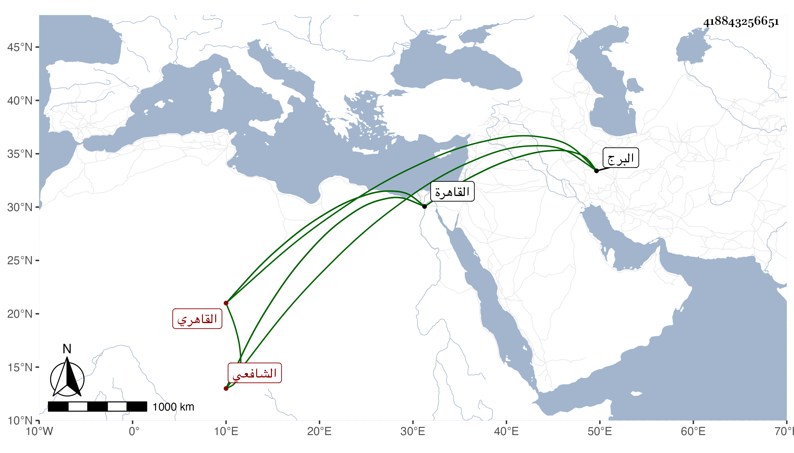

0902Sakhawi.DawLamic.ITO20230111-ara1.EIS1600.418843256651
Biography ID: 418843256651
559
محمد بن الحسن بن عبد الله البهاء بن البدر البرجي ثم القاهري الشافعي . أصله من محلة البرج غربي القاهرة ثم سكن أبوه القاهرة وولى قضاء المحمل ونشأ ولده هذا تحت كنفه وزوجه ابنة السراج البلقيني ، وترقى وصحب الأكابر وولي الحسبة غير مرة ووكالة بيت المال ونظر الكسوة ثم باشر عمارة الجامع المؤيدي بواسطة ططر لمزيد اختصاصه به ، وتولع به الشعراء حين ميل منارته فقال ابن حجة :
| على البرج من بابي زويلة أنشئت | منارة بيت الله والمنهل المنجي |
| فأخنى بها البرج اللعين أمالها | ألا صرحوا يا قوم باللعن للبرجي |
وقال غيره :
| عتبنا على ميل المنار زويلة | وقلنا تركت الناس بالميل في هرج |
| فقال قريني برج نحس أمالها | فلا بارك الرحمن في ذلك البرج |
وكانت له رياسة وفضل وأفضال وكرم ، ثم تعطل ومرض سنين حتى مات في يوم الخميس عاشر صفر سنة أربع وعشرين عن ثلاث وسبعين سنة ويقال أنه لو أدرك سلطنة ططر لصار إلى أمر عظيم ، وقد ذكره شيخنا في إنبائه وقال إنه استولد ابنة السراج البلقيني ابنه البدر محمد ثم ماتت فتزوج بلقيس ابنة أخيها بدر الدين بن السراج فأولدها أولادا .
